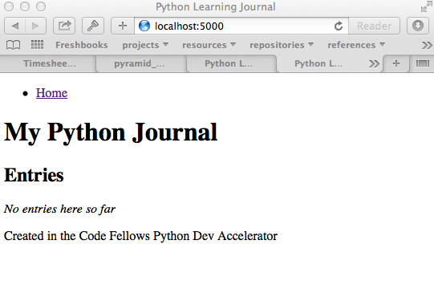

In part one of this tutorial, you built the data model for a simple learning journal web application using Pyramid and PostgreSQL. You deployed this work to Heroku and confirmed that you could see a simple page.
In this second part, you’ll build the control layer and the view layer for this application. Along the way, you’ll learn about Test-Driven Development and unit testing in Python using the pytest package.
Ready? Let’s begin!
In part 1, you created a virtualenv project to work in. The first step for starting a new work day on the app will be to return to that environment:
cewing$ workon learning_journal
[learning_journal]
192:learning_journal cewing$
Next, you’ll want to change directories into your git repository and make a new branch for the work in this part of the tutorial:
[learning_journal]
192:learning_journal cewing$ cd learning_journal/
[learning_journal]
[master=]
192:learning_journal cewing$ git checkout -b step2
Switched to a new branch 'step2'
[learning_journal]
[step2]
192:learning_journal cewing$
You’ll do your work for this part of the tutorial in this branch, and then when your tests are passing, merge it back to your master branch. Building this habit ensures that your master branch always contains code that is deployable.
Before you go to far, a word or two about the circle of life.
Every interaction in an HTTP-based system is bounded by the interchange of one request and one response. No HTTP application can do anything until some client makes a request. And no action by such an application is complete until a response has been sent back to the client.
This is the lifecycle of an http web application.
In a data-driven application, the database is the memory store for the application. It makes sense to bind the lifecycle of a database connection to this same request/response cycle.
Pyramid does not dictate that you write an application that uses a database. Because of this, managing the lifecycle of database connection so that they are connected to the request/response cycle is up to you.
Happily, Pyramid does provide a way to help you.
In Pyramid, the beginning of a request/response cycle is marked by an event. Pyramid events can be subscribed to by functions so that when an event happens, the function is called. This is an example of the Observer pattern.
To subscribe to an event, we use the subscriber decorator. The function we decorate must take event as it’s sole argument. The event that is passed to the function will have access to the newly created request, your app, settings and so on. Add the following code to your journal.py file:
# add imports to the top of the file
from pyramid.events import NewRequest, subscriber
# and add this function below the init_db function you wrote yesterday:
@subscriber(NewRequest)
def open_connection(event):
request = event.request
settings = request.registry.settings
request.db = connect_db(settings)
Notice that the newly created request is an attribute of the event. This request is a Python object created that represents all the information received from a client who is viewing our application. It will be passed to functions like views that require it, and so it is a fine place to put a database connection.
Now that every new request will have a connection to the database on it, we can deal with the opposite end of the request/response cycle. We want to close the connection we created when the cycle is complete.
In Pyramid, the end of the request/response cycle is not marked by an event. Instead, there is a hook on the request object itself that lets us register callback functions for a point just before the response is sent back to the client. We register callbacks by passing them to the add_finished_callback method of the request object.
Begin by writing the callback function. It will take only the request as an argument:
# and this function just below open_connection
def close_connection(request):
"""close the database connection for this request
If there has been an error in the processing of the request, abort any
open transactions.
"""
db = getattr(request, 'db', None)
if db is not None:
if request.exception is not None:
db.rollback()
else:
db.commit()
request.db.close()
Then modify the open_connection function you just wrote above, adding one final line to the function:
def open_connection(event):
# ...
request.db = connect_db(settings)
request.add_finished_callback(close_connection)
Once you’ve written these functions, commit your changes with a comment about what you’ve just done. “Commit early and commit often” is a good programmer’s motto.
In Test Drive Development you start by writing tests that demonstrate the functionality you want to build. Once a test is written, you run it and see that it fails. This proves that your application hasn’t sneakily already provided that functionality and robbed you of a job. Then you implement the code needed to make the test pass.
Before you can write tests, though, you’ll need to add a new package you’ll be using to run your tests: pytest. In your terminal, with your learning_journal virtualenv active, use pip to install pytest:
[learning_journal]
[step2]
192:learning_journal cewing$ pip install pytest
Downloading/unpacking pytest
Downloading pytest-2.5.2.tar.gz (608kB): 608kB downloaded
Running setup.py (path:/Users/cewing/virtualenvs/learning_journal/build/pytest/setup.py) egg_info for package pytest
...
Successfully installed pytest py
Cleaning up...
[learning_journal]
[step2]
192:learning_journal cewing$
Then, you’ll need to create a new file to hold your tests. Call it test_journal.py:
[learning_journal]
[step2]
192:learning_journal cewing$ touch test_journal.py
[learning_journal]
[step2]
192:learning_journal cewing$
At this point, your project directory structure should look like this:
../../learning_journal/
└── learning_journal
├── .gitignore
├── LICENSE
├── Procfile
├── README.md
├── journal.py
├── requirements.txt
└── test_journal.py
The pytest module provides a new command, py.test. When you execute that command in your terminal, the package uses a standard heuristic to find tests.
To begin, add the following code in your test_journal.py file:
# -*- coding: utf-8 -*-
from contextlib import closing
from pyramid import testing
import pytest
from journal import connect_db
from journal import DB_SCHEMA
TEST_DSN = 'dbname=test_learning_journal user=cewing'
def init_db(settings):
with closing(connect_db(settings)) as db:
db.cursor().execute(DB_SCHEMA)
db.commit()
def clear_db(settings):
with closing(connect_db(settings)) as db:
db.cursor().execute("DROP TABLE entries")
db.commit()
def clear_entries(settings):
with closing(connect_db(settings)) as db:
db.cursor().execute("DELETE FROM entries")
db.commit()
def run_query(db, query, params=(), get_results=True):
cursor = db.cursor()
cursor.execute(query, params)
db.commit()
results = None
if get_results:
results = cursor.fetchall()
return results
These functions will serve as utilities for our tests.
Notes
Take a moment to create that new database:
[learning_journal]
[step2]
192:learning_journal cewing$ createdb test_learning_journal
You’ve created a clear_db function. It will be used for removing your test database table when the tests are finished for isolation.
You’ve also created a new init_db function. It will be used for setting up the database before tests begin. But it requires settings passed in instead of deriving them from the environment.
The pytest module does more than just test discovery. It supports fixtures.
Fixtures help you to manage resources needed for your tests. They are run before and after your tests. You can use them to create and destroy resources needed for testing. Fixtures help ensure that you have control over the environment where your tests run.
You’ll add a few fixtures to help test your Pyramid app.
The first fixture is responsible for generating and clearing the test database. Add this code to test_journal.py:
@pytest.fixture(scope='session')
def db(request):
"""set up and tear down a database"""
settings = {'db': TEST_DSN}
init_db(settings)
def cleanup():
clear_db(settings)
request.addfinalizer(cleanup)
return settings
NOTES:
The next fixture we create will be responsible for providing us with a request object that we can use in our tests. We want to mock features of the real Pyramid request that are used by our code. Add the following to test_journal.py:
@pytest.yield_fixture(scope='function')
def req_context(db, request):
"""mock a request with a database attached"""
settings = db
req = testing.DummyRequest()
with closing(connect_db(settings)) as db:
req.db = db
req.exception = None
yield req
# after a test has run, we clear out entries for isolation
clear_entries(settings)
Notes:
Your journal’s data model consists of entries. You’ve set up a simple database schema to represent them:
CREATE TABLE entries (
id serial PRIMARY KEY,
title VARCHAR (127) NOT NULL,
text TEXT NOT NULL,
created TIMESTAMP NOT NULL
)
To write an entry, what would you need to do?
Start by writing a test that demonstrates the desired functionality. In test_journal.py, add the following:
def test_write_entry(req_context):
from journal import write_entry
fields = ('title', 'text')
expected = ('Test Title', 'Test Text')
req_context.params = dict(zip(fields, expected))
# assert that there are no entries when we start
rows = run_query(req_context.db, "SELECT * FROM entries")
assert len(rows) == 0
result = write_entry(req_context)
# manually commit so we can see the entry on query
req_context.db.commit()
rows = run_query(req_context.db, "SELECT title, text FROM entries")
assert len(rows) == 1
actual = rows[0]
for idx, val in enumerate(expected):
assert val == actual[idx]
NOTES
In your terminal, run the py.test command to see the expected failure:
[learning_journal]
[step2 *]
192:learning_journal cewing$ py.test
============================= test session starts ==============================
platform darwin -- Python 2.7.5 -- py-1.4.26 -- pytest-2.6.4
collected 1 items
test_journal.py F
=================================== FAILURES ===================================
_______________________________ test_write_entry _______________________________
req_context = <pyramid.testing.DummyRequest object at 0x10679aa10>
def test_write_entry(req_context):
> from journal import write_entry
E ImportError: cannot import name write_entry
test_journal.py:67: ImportError
=========================== 1 failed in 0.20 seconds ===========================
[learning_journal]
[step2 *]
192:learning_journal cewing$
Next you need to write the function that will make the test pass. What can you tell about the function from the test you just wrote?
Remember, when writing SQL statements you MUST use parameterized statements and placeholders. Review your SQL persistence reading for more on this.
Peek At A SolutionThe function we create here is a controller. It takes information from a request, passes it to the data model for persistence, and returns some value as a result.
NOTES
Re-run your tests and verify that your work is correct:
[learning_journal]
[step2 *]
192:learning_journal cewing$ py.test
============================= test session starts ==============================
platform darwin -- Python 2.7.5 -- py-1.4.26 -- pytest-2.6.4
collected 1 items
test_journal.py .
=========================== 1 passed in 0.44 seconds ===========================
[learning_journal]
[step2 *]
192:learning_journal cewing$
What other tests might you implement here? Are there restrictions on the values that ought to be placed in the database you wish to verify? How might you test those restrictions?
Try your hand at writing a few tests of your own.
Remember, when you are finished with this step, commit your changes to git so you can preserve them. Write a quality commit message explaining what you’ve done and why.
To read your journal, you’ll need a method that returns entries. For now, the controller function can return all of them for a simple listing page. Your specs:
Again, begin with tests. Back in test_journal.py add the following code:
# add imports up top
import datetime
from journal import INSERT_ENTRY
# Then add two new tests at the bottom
def test_read_entries_empty(req_context):
# call the function under test
from journal import read_entries
result = read_entries(req_context)
# make assertions about the result
assert 'entries' in result
assert len(result['entries']) == 0
def test_read_entries(req_context):
# prepare data for testing
now = datetime.datetime.utcnow()
expected = ('Test Title', 'Test Text', now)
run_query(req_context.db, INSERT_ENTRY, expected, False)
# call the function under test
from journal import read_entries
result = read_entries(req_context)
# make assertions about the result
assert 'entries' in result
assert len(result['entries']) == 1
for entry in result['entries']:
assert expected[0] == entry['title']
assert expected[1] == entry['text']
for key in 'id', 'created':
assert key in entry
What would you expect to be the result of running these tests now? Run your tests to ensure that the two new tests fail in the way you expect. If you get a different result that you expected, ask yourself why:
[learning_journal]
[step2 *]
192:learning_journal cewing$ py.test
============================= test session starts ==============================
platform darwin -- Python 2.7.5 -- py-1.4.26 -- pytest-2.6.4
collected 3 items
test_journal.py .FF
=================================== FAILURES ===================================
___________________________ test_read_entries_empty ____________________________
req_context = <pyramid.testing.DummyRequest object at 0x107c77410>
def test_read_entries_empty(req_context):
> from journal import read_entries
E ImportError: cannot import name read_entries
test_journal.py:94: ImportError
______________________________ test_read_entries _______________________________
req_context = <pyramid.testing.DummyRequest object at 0x107c77f90>
def test_read_entries(req_context):
# prepare data for testing
now = datetime.datetime.utcnow()
expected = ('Test Title', 'Test Text', now)
run_query(req_context.db, INSERT_ENTRY, expected, False)
# call the function under test
> from journal import read_entries
E ImportError: cannot import name read_entries
test_journal.py:106: ImportError
====================== 2 failed, 1 passed in 0.23 seconds ======================
[learning_journal]
[step2 *]
192:learning_journal cewing$
Now you are ready to implement the controller function that will make these tests pass. Look carefully at the tests you’ve written. What do they tell you about the function you need to write?
Back in journal.py go ahead and work on implementing this function yourself.
Peek At A SolutionNOTES
Back in your terminal, your tests should now pass:
[learning_journal]
[step2 *]
192:learning_journal cewing$ py.test
============================= test session starts ==============================
platform darwin -- Python 2.7.5 -- py-1.4.26 -- pytest-2.6.4
collected 3 items
test_journal.py ...
=========================== 3 passed in 0.87 seconds ===========================
[learning_journal]
[step2 *]
192:learning_journal cewing$
What more might you test about this implementation? How would you go about testing it? Try your hand at adding a test or two of your own.
Remember, when you’re finished commit your changes. Make a useful commit message about what you did any why.
You’ve now moved quite some distance in implementing your learning journal in Pyramid.
The next step will be to add a visible face to the journal.
The last step in the second part of this tutorial is to put a view on the front page of this journal so we can see it online.
You’ll use the Jinja2 templating language and connect your controllers to the views that will display the data they expose.
First, a detour into templates as they work in Pyramid.
Within the world of Pyramid, the data assembled by the controllers we created above are passed off to a renderer. A renderer is responsible for taking that information, turning it into something that a client can use and sending that off to be returned to the client. The data might be turned into an HTML page, or a JSON response, or an XML document. For this reason, we consider the renderer in Pyramid to fill the roll of the View in the MVC pattern.
Pyramid comes with a few simple renderers built-in: 'string', 'json', and 'jsonp'. You can add new renderers by installing additional packages and configuring them. We want to use Jinja2 Templates as renderers, and so we are going to install pyramid_jinja2, which wraps the Jinja2 template language in structures that Pyramid can use as renderers.
Begin by installing the package into your virtual environment:
[learning_journal]
[step2 *]
192:learning_journal cewing$ pip install pyramid_jinja2
Downloading/unpacking pyramid-jinja2
...
Successfully installed pyramid-jinja2 Jinja2 markupsafe
Cleaning up...
[learning_journal]
[step2 *]
192:learning_journal cewing$
Once this is complete, add the dependency to your requirements.txt file:
[learning_journal]
[step2 *]
192:learning_journal cewing$ pip freeze > requirements.txt
[learning_journal]
[step2 *]
192:learning_journal cewing$
That will ensure that Heroku will also be aware of these changes.
Finally, you’ll need to inform your application that it should use this new renderer. Pyramid handles this using configuration. A package like pyramid_jinja2 can provide configuration to be included by an application that depends on it. You add this using the include method of the config object.
In journal.py make the following change:
# configuration setup
config = Configurator(
settings=settings,
session_factory=session_factory
)
config.include('pyramid_jinja2') # <-- ADD THIS LINE HERE
config.add_route('home', '/')
This will ensure that the configuration pyramid_jinja2 requires to work properly is in place.
Once you are done, commit your changes to git and make a good commit message explaining what you’ve done and why.
Jinja2 templates use the concept of an Environment to:
Pyramid has a number of ways of working with this environment to assist in finding templates. The simplest to use (and the default in Pyramid) is caller-relative template lookup.
In this scheme, templates are searched for in a path relative to the file in which the calling code is found. Our entire application lives in a single file, so we can establish a location adjacent to that file to hold our templates.
In your learning_journal repository, add a new templates directory:
[learning_journal]
[step2]
heffalump:learning_journal cewing$ mkdir templates
[learning_journal]
[step2]
heffalump:learning_journal cewing$
In this directory create a new file base.jinja2:
<!DOCTYPE html>
<html lang="en">
<head>
<meta charset="utf-8">
<title>Python Learning Journal</title>
<!--[if lt IE 9]>
<script src="http://html5shiv.googlecode.com/svn/trunk/html5.js"></script>
<![endif]-->
</head>
<body>
<header>
<nav>
<ul>
<li><a href="/">Home</a></li>
</ul>
</nav>
</header>
<main>
<h1>My Python Journal</h1>
<section id="content">
{% block body %}{% endblock %}
</section>
</main>
<footer>
<p>Created in the Code Fellows Python Dev Accelerator</p>
</footer>
</body>
</html>
This file represents the main structure of our website. Individual pages will be able to extend this structure through template inheritance
NOTE
If you have a layout for your learning journal you’d like to use, please feel free to do so. You may wish to begin by using my simple layout above, to minimize confusion until you have the basics working.
Jinja2 allows you to combine templates in a number of different ways.
In our base.jinja2 we added a block called body. Now we can create a template that will extend that.
Keep it simple for now, create a new file, list.jinja2 in templates. This will extend your base.jinja2 file, filling the body block in that template:
{% extends "base.jinja2" %}
{% block body %}
<h2>Entries</h2>
{% for entry in entries %}
<article class="entry" id="entry={{entry.id}}">
<h3>{{ entry.title }}</h3>
<p class="dateline">{{ entry.created.strftime('%b. %d, %Y') }}
<div class="entry_body">
{{ entry.text|safe }}
</div>
</article>
{% else %}
<div class="entry">
<p><em>No entries here so far</em></p>
</div>
{% endfor %}
{% endblock %}
Notice that because of caller-relative template lookup we refer to the base.jinja2 file without any directory reference. Both that file and this list.jinja2 file are in the same location so a relative lookup only needs the filename.
The template will loop over a set of entries, showing each in an HTML5 <article/> tag.
At this point, your project directory should look like this:
/learning_journal
└── learning_journal
├── .gitignore
├── LICENSE
├── Procfile
├── README.md
├── journal.py
├── requirements.txt
├── templates
│ ├── base.jinja2
│ └── list.jinja2
└── test_journal.py
This template we’ve just created will be a Pyramid renderer. We’ve noted that the renderer in Pyramid takes the view role in the MVC pattern. What remains for us to do is to connect the controller functions to these new renderers we are creating so that we can see the results of our hard work.
Before we test viewing entries, we must first talk about different types of tests.
The tests we’ve written so far are what you can call unit tests. They concentrate on small, simple functionality and mock or make up any environment they require to function. Unit tests are designed to test functions in isolation from a real system to ensure that they operate as intended on their own.
The new tests we are going to write are functional tests. They will require that we engage all of Pyramid’s functionality so that we can request a web page and make assertions about the content that is returned to us.
To write functional tests we’ll need to add a new dependency on a package called WebTest. This package will set up a complete WSGI application and provide us with machinery we can use to interact with it.
Begin by installing WebTest:
[learning_journal]
[step2]
heffalump:learning_journal cewing$ pip install WebTest
...
Cleaning up...
[learning_journal]
[step2 *]
heffalump:learning_journal cewing$
Next, we will have to create a pytest fixture that will set everything up for us:
Between the WebTest documentation and code you’ve already written, you can try writing this new fixture on your own.
Peek At A SolutionNow that we have a fixture that will provide us with a functional app we can interact with, we can write our first tests for the view of a list of entries. Add the following to test_journal.py:
def test_empty_listing(app):
response = app.get('/')
assert response.status_code == 200
actual = response.body
expected = 'No entries here so far'
assert expected in actual
NOTES
Next, you’ll test what happens when you have some entries. But to do so, you’ll need to create entries. This test requires that data be written, because the app will get a connection of its own, separate from the one you use for writing.
The simplest solution is to write the entry and commit it, then delete it when the test is over.
Try your hand at writing a function scoped fixture that will take care of this for you. It’d be quite nice if it would return information about the entry it writes as well, so you can use it to test against:
Peek At A SolutionNow, use this new fixture in a test of retrieving a listing of entries. See if you can write this test yourself:
Peek At A SolutionIf you run your tests with these two new ones added, you should see both fail:
[learning_journal]
[step2 *]
heffalump:learning_journal cewing$ py.test
============================= test session starts ==============================
platform darwin -- Python 2.7.5 -- py-1.4.26 -- pytest-2.6.4
collected 5 items
test_journal.py ...FF
=================================== FAILURES ===================================
______________________________ test_empty_listing ______________________________
app = <webtest.app.TestApp object at 0x10d182490>
def test_empty_listing(app):
response = app.get('/')
assert response.status_code == 200
actual = response.body
expected = 'No entries here so far'
> assert expected in actual
E assert 'No entries here so far' in 'Hello World'
test_journal.py:148: AssertionError
_________________________________ test_listing _________________________________
app = <webtest.app.TestApp object at 0x10d1a7150>
entry = ('Test Title', 'Test Text', datetime.datetime(2015, 1, 29, 2, 9, 10, 326267))
def test_listing(app, entry):
response = app.get('/')
assert response.status_code == 200
actual = response.body
for expected in entry:
> assert expected in actual
E assert 'Test Title' in 'Hello World'
test_journal.py:156: AssertionError
====================== 2 failed, 3 passed in 0.46 seconds ======================
[learning_journal]
[step2 *]
heffalump:learning_journal cewing$
Interesting. Your tests fail, but not because you haven’t implemented a function yet. Instead they fail because there is a function found that is returning the wrong thing: “Hello World”
This brings us to the topic of how Pyramid serves HTTP requests.
Every time a client requests a page from your Pyramid app (and this is what happens when you call the get method of your app) a process happens.
Matching a Route
The first step is that Pyramid looks for routes that have been configured and tries to match one to the path of the request from the client. At this point, you may say “But I never made any routes, I don’t even know what one is”. You’d be wrong.
In the first step of our application, when you created the main function, you included this line of configuration:
config.add_route('home', '/')
That code configures a single route. The route has a name ('home') and a pattern ('/'). Pyramid tries to match the path of an incoming request to that pattern. Our tests both have this line of code:
response = app.get('/')
That line uses the app as a mock web browser to make a GET request for the path '/'! This path matches the pattern for our 'home' route, and so that’s the route that is selected.
Selecting a View
Once a route has been selected, the next step Pyramid takes is to select a view that is configured to use that route. Again, you might think you have no idea what a view is in Pyramid, but actually, you wrote one of these in the first step of this tutorial as well:
@view_config(route_name='home', renderer='string')
def home(request):
return "Hello World"
The view_config decorator is used by Pyramid to decorate some function that can serve as a view function. The sole hard-and-fast requirement of a view function is that it take request as an argument.
Do you have any other functions you’ve written so far in journal.py that might also serve as view functions?
The view_config decorator can take a number of arguments. One that you must provide is route_name. This parameter serves to connect a view function to a route.
When Pyramid matches the 'home' route, it then seeks a view function that is configured with that route_name. This home function is found, and it is executed.
Rendering a Response
After the view is executed, the return value of the function is passed on to any renderer configured by the view_config decorator. That renderer is responsible for turning the data from the view function into a response suitable for sending back to a client. In this case, the 'string' renderer takes whatever value is returned by the view function and sends it back to the client as a plain text response. This is why your test sees the body of the response as “Hello World”!
A view can be configured without a renderer. If this is the case, the view itself is responsible for returning a value suitable for returning to the client. We will see an example of this later.
Although the MVC pattern is a useful abstraction, there are a few differences in how things are named in Python web frameworks:
| MVC Terminology | Python Web Frameworks |
|---|---|
| Model | Model |
| Conroller |
|
| View |
|
Note in particular that what MVC calls a controller is most directly analogous to what Python calls a view. This will be a source of confusion, so I will try to use the term view function to be more precise.
For more on this difference and why it exists, you can read this from the Pyramid design documentation.
It’s easiest to see the effects of this chain of operations by using a real browser.
Take a moment to start up your application at the command line:
[learning_journal]
[step2 *]
heffalump:learning_journal cewing$ python journal.py
serving on http://0.0.0.0:5000
When it’s running, point your web browser at this address:
You should see something like this:

Now, quit your application with ^C (that’s the control key and the letter c). Then remove the following code from your journal.py file:
@view_config(route_name='home', renderer='string')
def home(request):
return "Hello World"
Restart your application as you did before. Reload the same URL and you should see this:

If a matched route has no view to pass the request to, it will raise a 404 error.
Now, let’s re-connect the 'home' route to a view. We need a function that will take the request as an argument and will return a list of entries. Do we have such a function available? You betcha we do.
Make the following changes to journal.py:
@view_config(route_name='home', renderer='templates/list.jinja2')
def read_entries(request):
"""return a list of all entries as dicts"""
# ... leave the rest of the function unchanged
Finally, having saved this change, restart your application and again load the URL:
You should see something like this:
You’ve now attached the 'home' route to the read_entries function, making it a view function. And you’ve configured it to use the list.jinja2 renderer we created earlier. Review that template. Make sure you understand why the page is appearing with “No entries here so far”.
Quit your application again and now all your tests should pass:
[learning_journal]
[step2 *]
heffalump:learning_journal cewing$ py.test
============================= test session starts ==============================
platform darwin -- Python 2.7.5 -- py-1.4.26 -- pytest-2.6.4
collected 5 items
test_journal.py .....
=========================== 5 passed in 0.37 seconds ===========================
[learning_journal]
[step2 *]
heffalump:learning_journal cewing$
It’s no fun to do all this work without seeing what you’ve done.
Repeat the steps you performed for the previous assignment to submit your work and prepare for deployment. As a reminder, here’s the outline:
You really do want to see your first journal entry, don’t you?
Go ahead and create one. Start by opening a python session with Heroku:
[learning_journal]
[master=]
192:learning_journal cewing$ heroku run python
Running `python` attached to terminal... up, run.9416
Python 2.7.6 (default, Jan 16 2014, 02:39:37)
[GCC 4.4.3] on linux2
Type "help", "copyright", "credits" or "license" for more information.
>>>
And now, create a first entry using your controller API:
>>> from journal import connect_db
>>> import os
>>> settings = {}
>>> settings['db'] = os.environ.get('DATABASE_URL', None)
>>> settings
{'db': 'postgres://<user>:<password>@<domain>:<port>/<database>'}
>>> db = connect_db(settings)
>>> db
<connection object at 0x7fef3ec3f280; dsn: 'postgres://<user>:<password>@<domain>:<port>/<database>', closed: 0>
>>> from pyramid import testing
>>> req = testing.DummyRequest()
>>> req.db = db
>>> from journal import write_entry
>>> title = "My First Entry"
>>> text = "Today I learned you can write a journal entry from the command line in Heroku. Neat!"
>>> req.params = {'title': title, 'text': text}
>>> result = write_entry(req)
>>> result
{}
>>> db.commit()
>>>
Once you’re done, use the standard ^D to detach from the Python terminal on Heroku. At this point you are good to go. Well done!
At this point, you should actually be able to see your website running on Heroku. You can open a browser and point immediately to the site using a command from the Heroku toolbelt:
[learning_journal]
[master=]
heffalump:learning_journal cewing$ heroku open
Opening evening-brushlands-7955... done
Your browser should then open (or open a new tab) and you should see something a bit like this:

If you see an error instead, here are some tools to use in debugging:
[learning_journal]
[master=]
heffalump:learning_journal cewing$ heroku ps
The ps command should tell you if there are any dynos running. You should see output like this:
[learning_journal]
[master]
heffalump:learning_journal cewing$ heroku ps
=== web (1X): `python journal.py`
web.1: up 2015/01/28 19:28:17 (~ 2s ago)
If you see nothing instead you can use the scale command to start a new dyno:
[learning_journal]
[master]
heffalump:learning_journal cewing$ heroku scale web=1
Scaling dynos... done, now running web at 1:1X.
You can also use the scale command to turn your website off. Just scale web=0.
If you get messages saying that your application crashed when you run ps, or if you see “internal server error” messages in your browser indicating something is wrong with the code in your application, you can use the heroku logs command to see logfiles of the server:
[learning_journal]
[master]
heffalump:learning_journal cewing$ heroku logs
2015-01-26T04:30:17.767423+00:00 heroku[api]: Enable Logplex by c...
2015-01-26T04:30:17.767423+00:00 heroku[api]: Release v2 created by c...
...
These log messages may be quite cryptic, but they will help you to debug problems if you read them carefully.
Finally, remember that to help yourself figure out what is happening, you can always open a Python interpreter in the Heroku environment:
[learning_journal]
[master=]
192:learning_journal cewing$ heroku run python
Running `python` attached to terminal... up, run.9416
Python 2.7.6 (default, Jan 16 2014, 02:39:37)
[GCC 4.4.3] on linux2
Type "help", "copyright", "credits" or "license" for more information.
>>>
From there you can poke around at your journal code to see what might be wrong.